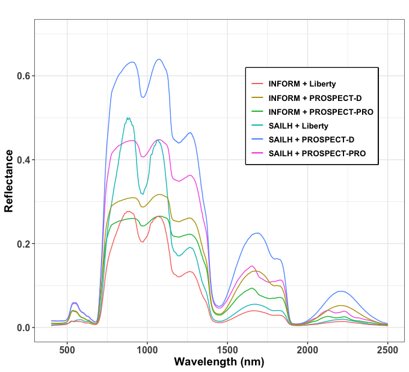
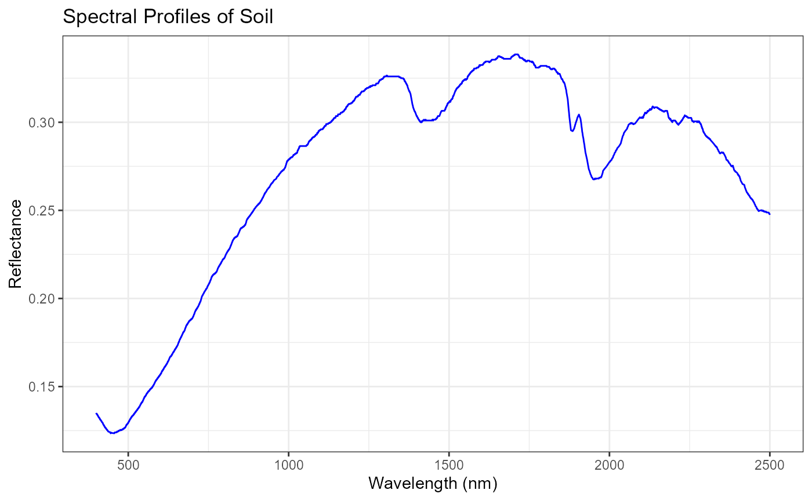
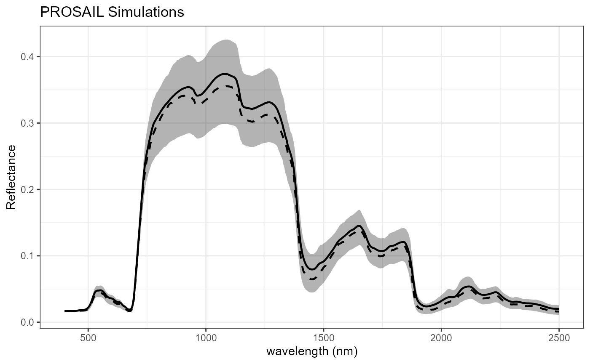
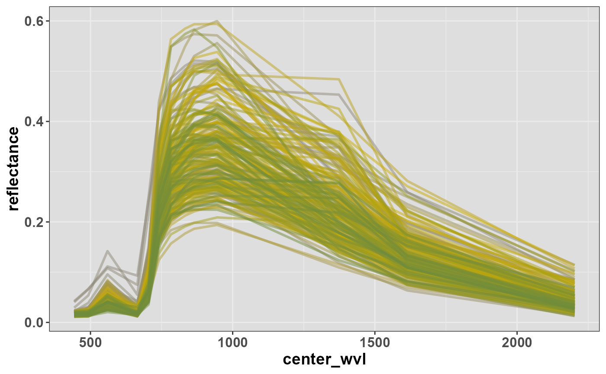
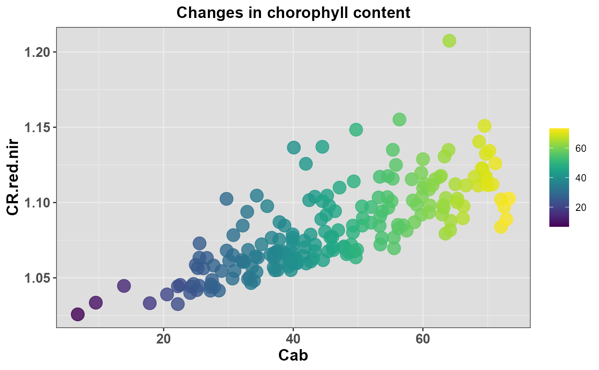

The ToolsRTM package
C.Camino
2026-08-20
ToolsRTM.Rmd#> Warning: package 'knitr' was built under R version 4.5.2
#> Warning: package 'kableExtra' was built under R version 4.5.31. Introduction
This tutorial provides an overview of the ToolsRTM packages, developed using R Markdown Notebook. The ToolsRTM package is an essential R package that integrates key radiative transfer (RT) models for simulating canopy reflectance across hyperspectral, Sentinel-2, and various other satellite scales. This versatile package includes numerous functions for estimating plant traits, calculating spectral indices, and generating time series data. Additionally, it facilitates the validation of predictions through comparisons with field observations.
Currently in the testing phase, the ToolsRTM package is equipped with a robust suite of tools designed for simulating canopy reflectance using a range of RT models at diverse satellite resolutions. Key models include INFORM, fourSAIL, and fourSAIL2 for canopy-scale simulations, as well as PROSPECT (with D and PRO variants), Liberty, and FLUSPECT (B-Cx) for leaf-level simulations. This comprehensive package empowers users to conduct detailed simulations across various scales and models, enabling versatile and accurate analyses of canopy reflectance characteristics.

Fig. 1 Simulation using several biophysical models.
The ToolsRTM package is integrated into the ToolsRTM Simulator app, which relies on two key R packages for optimal functionality. These packages are essential for efficiently simulating and executing functions within the server.
ToolsRTM Package: This comprehensive package consolidates various RT models for simulating reflectance at the Top of Canopy (TOC). It incorporates several canopy models, such as fourSAIL, fourSAIL2, and INFORM, along with leaf models. Additionally, the ToolsRTM package includes the Soil-Plant-Atmosphere Radiative Transfer (SPART) model, which simulates Top-Of-Atmosphere (TOA) reflectance by integrating atmospheric parameters. SPART employs three computationally efficient sub-models—BSM for soil, PROSAIL for vegetation canopies, and SMAC for atmospheric effects—ensuring accurate simulation of directional TOA observations.
SCOPEin Package: The SCOPEin R package is designed to execute the Soil Canopy Observation, Photochemistry, and Energy fluxes (SCOPE) radiative transfer model. Originally developed in MATLAB by Van der Tol et al. (2009) and extended by Yang et al. (2020), SCOPEin R enables seamless integration of the SCOPE model within the R environment, offering users the flexibility to harness its capabilities for in-depth analysis.
ToolsRTM and SCOPEinR are both part
of RTM-Suite,
which also ships a point-and-click Shiny app (no code required) covering
the same models – see Apps/RTMs,
runnable locally via shiny::runApp("Apps/RTMs"). Both R
packages are distributed under GPL-3.0 (see each package’s own
LICENSE/THIRD_PARTY_LICENSES.md for the
per-model breakdown).
The repositories for accessing the R packages are as follows:
The ToolsRTM package: https://gitlab.com/caminoccg/toolsrtm
The SCOPEinR package: https://gitlab.com/caminoccg/scopeinr
The monorepo (both packages, their Python ports, tutorials, and the Shiny apps together): https://github.com/CCGCAM/RTM-Suite
Citation: Camino et al. (2024): DOI: 10.1109/IGARSS53475.2024.10642442
2. ToolsRTM package
2.1 Install from GitLab
if (!requireNamespace("remotes", quietly = TRUE)) install.packages("remotes")
if (!requireNamespace("ToolsRTM", quietly = TRUE)) remotes::install_gitlab("caminoccg/toolsrtm")
library(ToolsRTM)2.2 Understanding the spectral profiles
To fully understand the simulations and their impact on canopy reflectance, it’s essential to explore how variations in specific plant traits, such as chlorophyll content (Cab), affect the spectral profile. The ToolsRTM package provides a convenient function, getSim_fromLUT, which allows users to simulate reflectance for a specific trait over a range of values using a radiative transfer model (RTM), such as PROSAIL.
Here’s an adapted version of your text for LAI and EWT using the PROSAIL and INFORM models:
In this example, we will generate simulations for the traits Leaf Area Index (LAI) and Equivalent Water Thickness (EWT) using the PROSAIL and INFORM models, respectively. The PROSAIL model simulates the interaction between radiation and plant canopy, providing insights into how LAI affects canopy reflectance. Similarly, the INFORM model allows us to explore how EWT influences reflectance properties.
The function getSim_fromLUT enables you to specify the range and intervals for both LAI and EWT, producing reflectance spectra that are visualized using ggplot. This approach allows for a comprehensive understanding of how these key plant traits influence canopy reflectance across different spectral regions.
3. Run RTMs in foward model with ToolsRTM package
The ToolsRTM package supports multiple leaf RTMs, including:
- PROSPECT and its variants (D-PRO): These models focus on simulating the reflectance and transmittance of plant leaves, capturing the spectral signatures associated with different leaf biochemical compositions.
- FLUSPECT: This model simulates fluorescence, reflectance, and transmittance of plant leaves, providing detailed information on how leaves interact with light, including the potential for detecting chlorophyll fluorescence.
- LIBERTY: Designed specifically for conifer forests, this model simulates the reflectance and transmittance of needle leaves, accounting for the unique structure and optical properties of coniferous foliage.
These leaf models are integrated into the following canopy radiative transfer models:
- INFORM: The Invertible Forest Reflectance Model provides an efficient way to model the reflectance of vegetation canopies, allowing for the retrieval of canopy properties from observed reflectance data.
- PROSAIL: This model combines the capabilities of PROSPECT and the Soil-Atmosphere Interaction Layer (SAIL) models, enabling the simulation of leaf and canopy reflectance under various environmental conditions.
- SPART: Developed for satellite measurements in the solar spectrum, the SPART model employs three computationally efficient RTMs for soil (BSM), vegetation canopies (PROSAIL), and atmosphere (SMAC). These sub-models are coupled using the four-stream theory and the adding method. The resulting Soil-Plant-Atmosphere Radiative Transfer model simulates directional Top-Of-Atmosphere (TOA) spectral observations, incorporating major effects such as sun-observer geometries and non-Lambertian reflectance of the land surface.
3.1 Example: Generating a LUT for PROSAIL
To simulate canopy reflectance using various radiative transfer models (RTMs) such as PROSAIL, you need to define a range of inputs that describe the plant and canopy traits. In this section, we will focus on generating a Look-up Table (LUT) using PROSAIL, which integrates leaf optical properties and canopy structure to simulate reflectance.
Here is an example of how to generate a LUT for PROSAIL with 200 samples, using the default input parameters provided by ToolsRTM. The LUT will contain a range of values for these traits, which are later used to simulate canopy reflectance. Here inputsPROSAIL can be replaced by inputsFlUSPECT, inputsPROSAIL, inputsPRO, inputsINFORM, inputsLiberty, inputsSPART or inputsRTMs (all inputs for each model)
inputsPRO <- ToolsRTM::inputsPROSAIL
nSamples =200
LUT<-as.data.frame(getLUT(inputs = inputsPRO, nLUT=nSamples, setseed = 1234))| Cab | Car | Anth | LMA | EWT | Cbrown | Prot | CBC | N | alpha | LIDFa | LIDFb | TypeLidf | LAI | hspot | tts | tto | psi |
|---|---|---|---|---|---|---|---|---|---|---|---|---|---|---|---|---|---|
| 45.38614 | 8.897541 | 1.3267458 | 0 | 0.0266275 | 0.7631390 | 0.0012601 | 0.0157670 | 1.862371 | 40 | 60.16221 | 0 | 2 | 2.531459 | 0 | 0 | 26.55547 | 0 |
| 46.17216 | 8.070285 | 2.1069005 | 0 | 0.0242104 | 0.8591507 | 0.0223563 | 0.0146524 | 1.722682 | 40 | 63.23264 | 0 | 2 | 3.028841 | 0 | 0 | 18.04713 | 0 |
| 58.27738 | 11.439456 | 0.6314292 | 0 | 0.0041352 | 0.4081567 | 0.0245266 | 0.0108471 | 1.990049 | 40 | 39.57890 | 0 | 2 | 4.584734 | 0 | 0 | 17.66566 | 0 |
| 60.95048 | 12.496161 | 4.2965531 | 0 | 0.0016152 | 0.5681268 | 0.0051936 | 0.0082630 | 1.966551 | 40 | 61.05380 | 0 | 2 | 3.545253 | 0 | 0 | 16.17003 | 0 |
| 37.17616 | 6.656451 | 2.2166784 | 0 | 0.0085231 | 0.1100567 | 0.0060146 | 0.0246577 | 2.393448 | 40 | 55.88659 | 0 | 2 | 2.077850 | 0 | 0 | 22.31040 | 0 |
| 32.25122 | 6.447336 | 4.2370288 | 0 | 0.0346564 | 0.5811504 | 0.0074219 | 0.0219041 | 1.719507 | 40 | 31.69976 | 0 | 2 | 4.504196 | 0 | 0 | 18.96268 | 0 |
| 63.48057 | 11.889203 | 1.8361347 | 0 | 0.0154023 | 0.8525743 | 0.0195149 | 0.0251860 | 2.229381 | 40 | 58.77193 | 0 | 2 | 3.168502 | 0 | 0 | 15.40411 | 0 |
| 38.76775 | 7.722539 | 0.9925294 | 0 | 0.0327724 | 0.5511505 | 0.0237411 | 0.0204741 | 1.770932 | 40 | 57.45765 | 0 | 2 | 2.841281 | 0 | 0 | 25.78839 | 0 |
| 33.03607 | 7.144124 | 2.5294463 | 0 | 0.0292619 | 0.0754433 | 0.0198030 | 0.0242666 | 2.135660 | 40 | 63.40508 | 0 | 2 | 4.374879 | 0 | 0 | 23.77267 | 0 |
| 32.89271 | 5.270612 | 1.9786497 | 0 | 0.0321659 | 0.2333977 | 0.0249881 | 0.0047053 | 1.562958 | 40 | 39.54829 | 0 | 2 | 3.513606 | 0 | 0 | 21.39100 | 0 |
3.2 Example: Retrieve Soil Properties
In this example, we will utilize default spectral soil data from the PROSAIL model to define the psoil parameter, which is related to water content in the soil. By adjusting this parameter, we can explore how varying proportions of dry and wet soil reflectance affect the overall spectral profile.
data <- ToolsRTM::dataSpec_PDB
Rsoil1 <- data[,11] # rsoil1 = dry soil
Rsoil2 <- data[,12] # rsoil2 = wet soil
psoil <- 0.5#runif(nSamples, 0, 1)
rsoil.default<- c(psoil*Rsoil1+(1-psoil)*Rsoil2)
# Create a data frame for ggplot
soil_spectral_data <- data.frame(
Wavelength = 400:2500,
Reflectance = rsoil.default)
# Plot using ggplot2
ggplot(soil_spectral_data, aes(x = Wavelength, y = Reflectance)) +
geom_line(color = "blue") +
labs(title = "Spectral Profiles of Soil",
x = "Wavelength (nm)",
y = "Reflectance") +
theme_bw()
The reflectance spectra are generated by combining the reflectance values of dry soil and wet soil based on the specified psoil proportion. The resulting spectral profiles provide valuable insights into the influence of water content on soil reflectance.
3.3 Example: Paralell inversion with PROSAIL model
n this example, we perform forward mode simulations using the PROSAIL model to generate synthetic spectral data. The process begins by defining the inputs for the PROSAIL model and creating a lookup table (LUT) with 200 samples. We utilize parallel computing to speed up the simulations by distributing the workload across multiple processor cores.
For each sample in the LUT, we use the ToolsRTM::foursail function to calculate the reflectance (rdot) and transmittance (rsot) of the leaves based on the defined parameters. Following this, we apply the Bidirectional Reflectance Distribution Function (BRDF) effect on the canopy model’s reflectance.
BRDF Effect: The BRDF describes how light is reflected off a surface, accounting for the directional dependence of reflectance. In the context of canopy models, this effect considers the interaction between incoming light and the structure of the foliage, as well as the angle of both the incoming light and the viewing direction. By incorporating the BRDF effect, we can achieve a more accurate representation of the spectral response of the canopy under various illumination and observation conditions. This adjustment is crucial for improving the realism of simulated spectral data and enhancing the model’s applicability in remote sensing applications. The BRDF effect allows us to simulate how the canopy reflects light in different directions, providing insights into how vegetation interacts with solar radiation, which is essential for understanding vegetation health, biomass estimation, and land cover classification.
After completing the simulations, we stop the parallel cluster to free up resources. The result is a set of reflectance data that incorporates both the leaf optical properties and the BRDF effects, enabling more accurate analyses and interpretations in remote sensing studies.
inputsPRO <- ToolsRTM::inputsPROSAIL
nSamples =200
LUT<-as.data.frame(getLUT(inputs = inputsPRO, nLUT=nSamples, setseed = 1234))
no_cores <- detectCores() - 2
cl <- makeCluster(no_cores)
registerDoParallel(cl)
sim.rfl<-list()
sims<-foreach(i=1:nSamples) %dopar% {
data.foursail_pro<-ToolsRTM::foursail(inputLUT=LUT[i,],rsoil=rsoil.default,
LeafModel = 'PROSPECT-PRO',spectrum.all = T)
rdot<-data.foursail_pro[[1]]
rsot<-data.foursail_pro[[2]]
data.foursail_pro<-ToolsRTM::Compute_BRF(rdot=rdot,rsot=rsot,tts=LUT[i,'tts'],
data.light =ToolsRTM::dataSpec_PDB)
sim.rfl[[i]]<-data.foursail_pro
} ##end paralle
stopCluster(cl)3.4 Example: Data Preparation and Reshaping
In this section, we begin by consolidating the results of the canopy simulations into a single data frame. This involves binding together multiple simulation outputs into a matrix, followed by the conversion of this matrix into a data frame for easier manipulation. A unique identifier is added to each row to facilitate subsequent analysis.
Next, we reshape the data from wide format to long format using the gather function. This transformation allows us to create a more streamlined dataset where each wavelength (or spectral band) is represented in a single column. The spectral bands are then organized as an ordered factor to ensure they are plotted in the correct sequence during visualization. Summary Statistics Calculation
sim.canopy<-do.call(rbind,sims)
wave<-c(400:2500)
# Convert matrix to data frame
df <- data.frame(sim.canopy)
df$row <- 1:nrow(df) # Add a row identifier
# Reshape the data to long format
df_long <- tidyr::gather(df, key = "band", value = "value", -row)
# Make 'band' an ordered factor with desired order
df_long$band <- factor(df_long$band, levels = paste0("X", 1:ncol(df)))3.5 Example: Visualization of simulations
In this section, we calculate key statistical measures for each spectral band to summarize the simulation results. This includes determining the average, median, and various percentiles (25th, 50th, and 75th) of the reflectance values across the simulations.
These summary statistics provide a comprehensive overview of how the canopy’s reflectance varies across different wavelengths. By summarizing the data in this manner, we can identify trends and variability within the simulations, which is crucial for understanding the impact of different parameters on canopy reflectance. Visualization of Simulation Results
# Calculate average, 25th percentile, and 50th percentile for each band
summary_stats <- df_long %>%
group_by(band) %>%
summarise(
average = mean(value),
median = median(value),
percentile_25 = quantile(value, 0.25),
percentile_50 = quantile(value, 0.50),
percentile_75 = quantile(value, 0.75)
)
summary_stats$band <-waveFinally, we visualize the calculated summary statistics using ggplot2. The plot displays the average reflectance across the wavelengths as a solid line, while the median is represented by a dashed line for comparison. Additionally, a shaded ribbon is included to illustrate the interquartile range (between the 25th and 75th percentiles), which provides insights into the variability of the reflectance values.
# Plot using ggplot2
ggplot(summary_stats, aes(x = band)) +
geom_line(aes(y = average), color = "black", size = 0.8) +
geom_line(aes(y = median), linetype = "dashed", color = "black", size = 0.8) +
geom_ribbon(aes(ymin = percentile_25, ymax = percentile_75), linetype = "dashed",
fill = "black", alpha = 0.3) +
labs(
title = "PROSAIL Simulations",
x = "wavelength (nm)",
y = "Reflectance"
) +
theme_bw()
This graphical representation allows for an intuitive understanding of the reflectance characteristics of the canopy as simulated by the PROSAIL model, highlighting the relationship between wavelength and reflectance while showcasing the uncertainty in the simulations.
3.6 Example: Spectral Resampling to Sentinel-2a resolution
In this example, we perform spectral resampling of simulated canopy reflectance data to match the spectral resolution of Sentinel-2a. The signal::interp1() function is used for linear interpolation to resample the reflectance from the original wavelength range (400-2500 nm) to the center wavelengths of the Sentinel-2a bands. The resampled reflectance is then visualized with ggplot2. Key Steps:
- Interpolation: The reflectance data is interpolated from the original wavelength range (400-2500 nm) to match the Sentinel-2a spectral bands.
- Visualization: The resampled reflectance values are plotted as a function of wavelength for each simulation, with colors indicating different trait values.
- Summary Statistics: Average, median, and percentile values (5th and 95th) are calculated for each wavelength band to provide a summary of the reflectance distribution across simulations.
sim.canopy<-as.matrix(do.call(rbind,sims))
wave<-c(400:2500)
depVar = 'Cab'
waves.se2 <- subset(ToolsRTM::sensor.characteristics, Sensor == 'Sentinel2a')
center_wvl <- waves.se2$average
# Initialize an empty list to store interpolated reflectance data
SE2_df <- list()
refl.se2 <- list()
# Perform linear interpolation for each row in sim.canopy
for (i in 1:nrow(sim.canopy)) {
# Perform linear interpolation to resample to Sentinel-2 bands
reflectance.i <- signal::interp1(wave, sim.canopy[i, ], center_wvl, method = "spline")
# Store the interpolated reflectance in the list
SE2_df[[i]] <- data.frame(center_wvl = center_wvl, reflectance = reflectance.i,
n.sim=i,trait=LUT[,depVar][i])
refl.se2[[i]] <- reflectance.i
}
# Convert the list to a matrix
df.SE2 <- do.call(rbind, SE2_df)
df.rfl.SE2 <- do.call(rbind, refl.se2)
# Calculate average, 25th percentile, and 50th percentile for each band
stats.SE2 <- df.SE2 %>%
group_by(center_wvl) %>%
summarise(
average = mean(reflectance,na.rm=T),
median = median(reflectance,na.rm=T),
percentile_05 = quantile(reflectance, 0.05,na.rm=T),
percentile_50 = quantile(reflectance, 0.50,na.rm=T),
percentile_95 = quantile(reflectance, 0.95,na.rm=T)
)
# Define the colors for the greens
gradient_colors <- colorRampPalette(c("cornsilk4",'gold3', "darkolivegreen4"))(nSamples)
# ggplot scatter plot with modifications
plot.ind <- ggplot(df.SE2, aes(x = center_wvl, y = reflectance,color=as.factor(trait))) + #ylim(0,1) +
#geom_tile(aes(color = trait), width = 1) +
geom_line(size = 1,alpha=0.5) +
scale_color_manual(values = gradient_colors) +
theme_bw() +
theme(legend.position="none",
plot.title = element_text(hjust = 0.5, size=10,face="bold"),
panel.background = element_rect(fill="grey87"),
axis.title = element_text(face="bold", size=14),
axis.text.y=element_text(hjust = 0.5, size=12,face="bold"),
axis.text.x=element_text(hjust = 0.5, size=12,face="bold"),
legend.title=element_blank())
print(plot.ind)
The plot shows how canopy reflectance changes across the Sentinel-2a spectral bands, with each line representing the reflectance for a specific simulation, allowing for a clear visualization of the spectral resampling process.
3.7 Example: Calculate Main Spectral Indices for Sentinel-2a Resolution
In this example, we calculate key spectral indices from the resampled Sentinel-2a reflectance data. The indices are derived from the resampled spectral bands using pre-defined Sentinel-2a spectral indices functions. These indices provide insights into various plant traits like chlorophyll content and canopy structure. Key Steps:
- Resampled Reflectance: The reflectance data, previously resampled to Sentinel-2a bands, is converted into a wide format for index calculation.
- Spectral Indices Calculation: Using the ToolsRTM::getIndicesSE2() function, a set of commonly used spectral indices (e.g., CR.red.nir) are calculated for each simulation based on the Sentinel-2a bands.
- Visualization: The relationship between chlorophyll content (Cab) and the computed spectral index (CR.red.nir) is visualized in a scatter plot using ggplot2. The color gradient reflects variations in the Cab trait values, helping to illustrate how the chlorophyll content influences the spectral indices.
# Convert resampled list to wide format df
SE2_wide <- tidyr::pivot_wider(df.SE2, names_from = c("center_wvl"), values_from = c("reflectance"))
SE2_wide <- tidyr::unnest(SE2_wide,names(SE2_wide))
# Rename bands
names(SE2_wide) <- c('n.sim','trait','B1','B2','B3','B4','B5','B6','B7','B8','B8A','B9','B10','B11','B12')
# Calculate indices
SE2.bands <- c('B1','B2','B3','B4','B5','B6','B7','B8','B8A','B9','B10','B11','B12')
SE2.ind <- ToolsRTM::getIndicesSE2(SE2_wide[,SE2.bands], sensor = "Sentinel-2a", df.data = NULL, fast.process =T)
# Combine LUT, bands and indices
LUT_SE2 <- cbind(LUT,SE2_wide)
LUT_SE2_Indices <- cbind(LUT,SE2_wide,SE2.ind)
# Define the colors for the greens
gradient_colors <- colorRampPalette(c("cornsilk4",'gold3', "darkolivegreen4"))(200)
# Create a ggplot scatter plot with modifications
plot.ind <- ggplot(LUT_SE2_Indices, aes_string(x = depVar, y = 'CR.red.nir',color=depVar)) +
geom_point(size = 5,alpha=0.8) +
viridis::scale_color_viridis() +
# Add plot title and legend title
labs(title = "Changes in chorophyll content", color = 'Cab') +
theme_bw() +
theme(legend.position="right",
plot.title = element_text(hjust = 0.5, size=14,face="bold"),
panel.background = element_rect(fill="grey87"),
axis.title = element_text(face="bold", size=14),
axis.text.y=element_text(hjust = 0.5, size=12,face="bold"),
axis.text.x=element_text(hjust = 0.5, size=12,face="bold"),
legend.title=element_blank())
print(plot.ind)
The plot highlights the sensitivity of the CR-re.nir index to changes in Cab, showing how this parameter affects the reflectance behavior in specific spectral regions.
4. Inputs and ranges used in the RTMs
Below are tables summarizing the key inputs and their respective ranges utilized in each RTMs.
4.1 Leaf radiative transfer models
4.1.1 PROSPECT model
| Name | Parameter | Units | Min | Max | Default Value |
|---|---|---|---|---|---|
| Chlorophyll Content | Cab | μg cm² | 1e-02 | 1e+02 | 50.000 |
| Carotenoid Content | Car | μg cm² | 0e+00 | 1e+01 | 2.500 |
| Anthocyanin Content | Anth | μg cm² | 0e+00 | 7e+00 | 2.000 |
| Brown Carbon Content | Cbrown |
|
0e+00 | 1e+00 | 0.200 |
| Mesophyll Structure Parameter | N |
|
1e+00 | 4e+00 | 2.500 |
| Water Content | EWT | g cm² | 1e-03 | 5e-02 | 0.010 |
| Protein Content | Prot | g cm² | 1e-04 | 3e-02 | 0.012 |
| Carbon-based Constituent | CBC | g cm² | 0e+00 | 3e-02 | 0.010 |
Note: LMA (Leaf Mass per Area) is calculated as
LMA = PROT + CBC in PROSPECT-D.”)
4.1.2 FLUSPECT model
| Name | Parameter | Units | Min | Max | Default Value |
|---|---|---|---|---|---|
| Fluorescence Quantum Efficiency | fqe |
|
0.01 | 5e-02 | 0.020 |
| Chlorophyll Content | Cab | μg cm² | 0.01 | 1e+02 | 50.000 |
| Carotenoid Content | Car | μg cm² | 0.01 | 4e+01 | 20.000 |
| Anthocyanin Content | Anth | μg cm² | 0.01 | 7e+00 | 2.000 |
| Leaf Senescence | Cs |
|
0.00 | 1e+00 | 0.010 |
| Violaxanthin - Zeaxanthin Transition Status | Cx |
|
0.00 | 1e+00 | 0.100 |
| Water Content | EWT | g cm² | 0.00 | 5e-02 | 0.010 |
| Dry Matter Content | LMA | g cm² | 0.00 | 5e-02 | 0.005 |
| Mesophyll Structure Parameter | N |
|
1.00 | 4e+00 | 2.500 |
4.1.3 LIBERTY model
| Name | Parameter | Units | Min | Max | Default Value |
|---|---|---|---|---|---|
| Chlorophyll content | Cab | μg cm⁻² | 0e+00 | 6e+01 | 40.0000 |
| Water content | EWT | g cm⁻² | 0e+00 | 5e-02 | 0.0090 |
| Lignin and cellulose content | lign.cell |
|
1e+01 | 8e+01 | 40.0000 |
| Nitrogen content | Nitrogen | g m⁻² | 3e-01 | 2e+00 | 1.0000 |
| Cell diameter | cell.d | m⁻⁶ | 2e+01 | 2e+02 | 58.0000 |
| Intercellular air space | inter.c |
|
1e-02 | 1e-01 | 0.0450 |
| Baseline absorption | baselinecabs | absorption | 4e-04 | 6e-04 | 0.0004 |
| Leaf thickness | leaf.thick | mm | 1e+00 | 1e+01 | 1.6000 |
| Albino absorption | albino.abs |
|
0e+00 | 4e+00 | 2.0000 |
4.2 Canopy radiative transfer models
4.2.1 FourSAIL model
| Name | Parameter | Units | Min | Max | Default Value |
|---|---|---|---|---|---|
| Leaf Area Index | LAI | m²/m² | 0 | 8 | 4.0 |
| leaf inclination distribution function a | LIDFa | deg | -1 | 1 | 0.5 |
| Type of leaf inclination distribution function b | LIDFb | deg | -1 | 1 | 0.5 |
| Hotspot | Hotspot |
|
0 | 1 | 0.5 |
| Sun zeith angle | tts | deg | 0 | 90 | 0.0 |
| Observer zeith angle | tto | deg | 0 | 90 | 30.0 |
| Azimuth Sun / Observer | psi | deg | 0 | 360 | 15.0 |
| soil factor | psoil |
|
0 | 1 | 0.5 |
4.2.2 INFORM model
| Name | Parameter | Units | Min | Max | Default Value |
|---|---|---|---|---|---|
| Leaf Inclination Distribution Function a | LIDFa | deg | 0.000 | 90.0 | 30.0 |
| Hotspot | hotspot |
|
0.000 | 1.0 | 0.1 |
| Sun Zenith Angle | tts | deg | 0.000 | 90.0 | 0.0 |
| Observer Zenith Angle | tto | deg | 0.000 | 90.0 | 45.0 |
| Azimuth Sun / Observer | psi | deg | 0.000 | 180.0 | 0.0 |
| Understory LAI | LAIu | m²/m² | 0.050 | 2.0 | 0.5 |
| Crown Diameter | cd | m | 0.000 | 10.0 | 4.5 |
| Stem Density | sd | ha⁻¹ | 0.000 | 3000.0 | 2500.0 |
| Tree Height | h | m | 1.000 | 40.0 | 20.0 |
| Sky Fraction | skyl |
|
0.001 | 0.4 | 0.1 |
| Soil Factor | psoil |
|
0.000 | 1.0 | 0.1 |
5. References
If you use any of the RTM models integrate into ToolSRTM package, please cite the following references:
5.1 PROSPECT model
Jacquemoud, S., Baret, F., 1990. PROSPECT: a model of leaf optical properties spectra. Remote Sens. Environ. 34, 75–91. https://doi.org/10.1016/0034-4257 (90)90100-Z
Jacquemoud S, Baret F, Hanocq J-F, 1992. Modeling spectral and bidirectional soil reflectance. Remote Sensing of Environment, 41, 123–132. https://doi.org/10.1016/0034-4257(92)90072-R
Féret J-B, Gitelson AA, Noble SD & Jacquemoud S, 2017. PROSPECT-D: Towards modeling leaf optical properties through a complete lifecycle. Remote Sensing of Environment, 193, 204–215. https://doi.org/10.1016/j.rse.2017.03.004
Féret, J.B., Berger, K., de Boissieu, F., Malenovský, Z., 2021. PROSPECT-PRO for estimating content of nitrogen-containing leaf proteins and other carbon-based constituents. Remote Sens. Environ. 252. https://doi.org/10.1016/j.rse.2020.112173
5.2 Liberty model
Dawson, T. P., Curran, P. J., & Plummer, S. E. (1998). LIBERTY—Modeling the Effects of Leaf Biochemical Concentration on Reflectance Spectra. Remote Sensing of Environment, 65(1), 50–60. https://doi.org/10.1016/S0034-4257(98)00007-8
Di Vittorio, A. V. (2009). Enhancing a leaf radiative transfer model to estimate concentrations and in vivo specific absorption coefficients of total carotenoids and chlorophylls a and b from single-needle reflectance and transmittance. Remote Sensing of Environment, 113(9), 1948–1966. https://doi.org/10.1016/j.rse.2009.05.002
5.3 FLUSPECT
Vilfan, N., van der Tol, C., Muller, O., Rascher, U., Verhoef, W., 2016. Fluspect-B: A model for leaf fluorescence, reflectance and transmittancespectra. Remote Sens. Environ. 186, 596?615. https://doi:10.1016/j.rse.2016.09.017
5.4 fourSAIL & fourSAIL-2 models
Verhoef W & Bach H, 2007. Coupled soil–leaf-canopy and atmosphere radiative transfer modeling to simulate hyperspectral multi-angular surface reflectance and TOA radiance data. Remote Sensing of Environment, 109:166-182. https://doi:10.1016/j.rse.2006.12.013
Verhoef W, Jia L, Xiao Q & Su Z, 2007. Unified optical-thermal four-stream radiative transfer theory for homogeneous vegetation canopies. IEEE Transactions in Geosciences and Remote Sensing, 45:1808–1822. https://doi.org/10.1109/TGRS.2007.895844
Jacquemoud S, Verhoef W, Baret F, Bacour C, Zarco-Tejada PJ, Asner GP, François C & Ustin SL, 2009. PROSPECT+ SAIL models: A review of use for vegetation characterization. Remote Sensing of Environment, 113:S56–S66. https://doi.org/doi:10.1016/j.rse.2008.01.026
5.5 INFORM model
Atzberger, C. (2000). Development of an invertible forest reflectance model: The INFOR-Model. In Buchroithner (Ed.), A decade of trans-european remote sensing cooperation. Proceedings of the 20th EARSeL Symposium Dresden, Germany, 14.-16. June 2000 (pp. 39-44).
Schlerf, M., Atzberger, C., 2006. Inversion of a forest reflectance model to estimate structural canopy variables from hyperspectral remote sensing data. Remote Sens. Environ. 100, 281–294. https://doi.org/10.1016/j.rse.2005.10.006
5.6 SPART model
Yang, P., van der Tol, C., Yin, T., & Verhoef, W. (2020). The SPART model: A soil-plant-atmosphere radiative transfer model for satellite measurements in the solar spectrum. Remote Sensing of Environment, 247, 111870.
For the details of the radiative transfer modelling
Yang, P., Verhoef, W., & van der Tol, C. (2017). The mSCOPE model: A simple adaptation to the SCOPE model to describe reflectance, fluorescence and photosynthesis of vertically heterogeneous canopies.Remote sensing of environment, 201, 1-11.